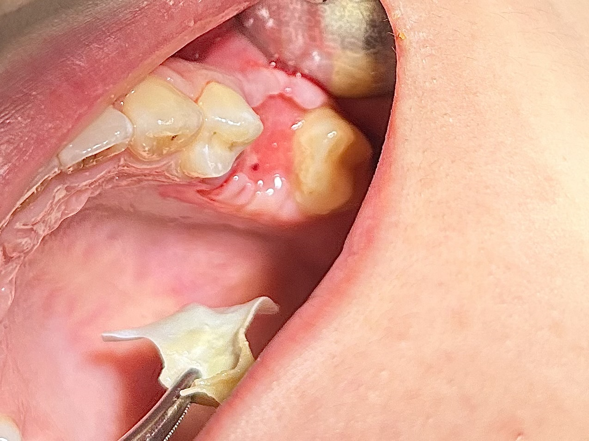
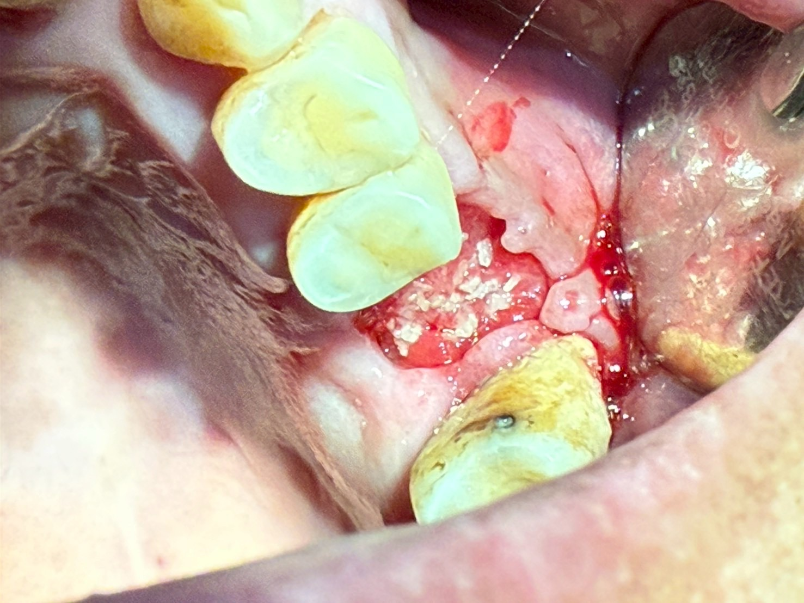

3D數位植牙｜案例分享
從這兩張術後一個月拆除高密度聚四氟乙烯膜（d-PTFE膜）的臨床影像中，可以觀察到極為鮮明的組織癒合對比：
1. 兩案例術區狀態評估（Clinical Observation）
圖 01（未吸煙患者）：優良的軟組織爬行與屏障建立
拆除 d-PTFE 膜後，下方的傷口呈現健康、粉紅且充血良好的肉芽組織（Osteoid / Osteopromotive Granulation Tissue），且周圍的角化上皮細胞已沿著膜下方向中心良好爬行包覆。
移植骨粉已完全被穩定的血塊與纖維基質包覆，無骨粉脫落或暴露感染的跡象，為下一階段的骨重塑（Bone remodeling）與新骨形成奠定非常理想的基底。
圖 02（重度吸煙患者）：上皮延遲癒合與骨粉暴露風險
膜拆除後，創口中央的骨移植顆粒（Particulate bone graft）仍大量直接暴露於口腔環境中，肉芽組織覆蓋嚴重不足。
邊緣軟組織呈現缺血、貧血樣的蒼白且邊緣缺乏健康的組織爬行，顯示血管新生與上皮化（Epithelialization）進程嚴重遲緩，骨粉遺失與繼發性感染的風險極高。
2. 吸煙（尼古丁）對口腔手術區域及組織修復的不良影響
吸煙（含尼古丁及香煙燃燒產物）是導致齒槽骨再生（GBR）與植牙失敗的最主要可干預風險因子之一，其致病機轉可歸納為以下四大維度：
一、 末梢血管收縮與組織缺氧（Microvascular Vasoconstriction & Hypoxia）
尼古丁的作用： 尼古丁會刺激交感神經系統，釋放兒茶酚胺（Catecholamines），導致口腔黏膜微血管強烈收縮，血流量顯著下降。
一氧化碳（CO）競爭： 香煙中的一氧化碳與血紅素的結合力遠高於氧氣，形成碳氧血紅素（Carboxyhemoglobin），降低血液攜氧能力。
臨床影響： 手術區域嚴重缺氧與營養供應不足，直接抑制了骨再生所需的血管新生（Angiogenesis），使細胞無法順利生長覆蓋骨粉（如圖 02 所示）。
二、 纖維母細胞與上皮細胞功能抑制（Inhibition of Cellular Migration & Proliferation）
尼古丁對纖維母細胞（Fibroblasts）與上皮細胞（Keratinocytes）具有細胞毒性，會抑制其附著、增殖與移轉能力。
正常情況下（圖 01），上皮細胞會在膜的保護下向創口中央爬行；而在重度吸煙者身上，上皮爬行機制受到阻礙，導致創口長期無法閉合（Delayed primary closure）。
三、 免疫功能抑制與增加感染風險（Immunosuppression & Infection Risk）
白血球功能下降： 尼古丁會降低嗜中性白血球（Neutrophils）的吞噬作用（Phagocytosis）與殺菌能力，並抑制巨噬細胞（Macrophages）的抗原呈現。
局部免疫力低下： 在開放式再生膜（Open-membrane）技術中，雖然 d-PTFE 膜能阻擋細菌穿透，但周圍軟組織若因吸煙失去免疫防禦，邊緣極易滲入細菌，引發骨移植區的微感染（Micro-infection）甚至骨粉排斥流失。
四、 骨整合與骨重塑受到破壞（Impaired Osteogenesis & Bone Remodeling）
尼古丁會直接抑制成骨細胞（Osteoblasts）的分化與活性，同時促進破骨細胞（Osteoclasts）的活性。
即使骨粉成功留置，吸煙者的缺氧微環境也會使新骨生成（New bone formation）的質量與密度大幅下降，延長骨整合時間，增加日後植牙初期穩定度不足的風險。
3. 臨床衛教與應對策略（Clinical Recommendations）
術前戒煙諮詢： 建議患者於術前至少 1–2 週至術後 4–6 週嚴格禁煙（戒煙黃金期），以給予微血管修復與早期上皮化足夠的時間。
圖 02 案例的後續處理：
由於骨粉暴露較多，拆膜後需密集追蹤，給予 0.12% 氯己定（CHX）漱口水 進行局部消毒，避免刷牙直接刺激創口。
可考慮使用高濃度血小板纖維蛋白（PRF）或低能量雷射（LLLT）輔助刺激軟組織生長與微循環修復。

